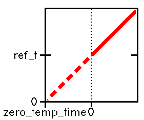
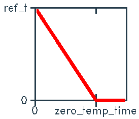

(More info can be found in the download page.)
Systems for which a default Makefile is present are listed below.
For all these systems GROMACS normally compiles without any problems,
and can also run in parallel (providing a good version of MPI or PVM is
present).
(More info can be found in the
download page.)
The extra things needed to start a run on multiple processors are:
you have to specify the -np <nr> option with
grompp
and you need to start mdrun
with the appropriate options.
For instance on an SGI with the newest verison of MPI:
First rest assured that GROMACS is amongst the fastest MD programs
currently available. We are often a factor of 2 faster than some of
the other leading packages. Ultimately, one would want to simulate seconds of whole ensembles
of proteins. Since that is not nearly possible (we only come 9 orders
of magnitude short in time and 18 orders of magnitude short in number
of particles), we suggest the following things to at least get the
maximum performance currently available: Also see our benchmark page for more
details on GROMACS performance. Also be sure to check it out in case
you are still considering what type of machine you should buy to
perform your simulations.
There can be a number of reasons for the large velocities in
your system. If it happens at the
beginning of the simulation, your system might be not equilibrated
well enough (e.g. it contains some bad contacts). Try a(nother) round
of energy minimization to fix this. Otherwise you might have a very
high temperature (which might be caused by incorrect use of
simulated annealing), and/or a too large
timestep. Experiment with these parameters till the error stops
occurring.
To really continue a simulation as if nothing had happened, you will
need coordinates and velocities in full precision (i.e.
.trj format).
.xtc trajectories are in
reduced precision (only 3 decimal places after the decimal point) and
do not contain velocity information at all. Feed this trajectory and
your origional .tpr file to
tpbconv to obtain a new
.tpr file, be sure
to specify the one-but-last frame from your
.trj file, since the very
last frame is likely to be corrupted due to the crash. With the
.tpr file
tpbconv produces you can
restart your simulation.
After the continuation run is finished, you will have your simulation
split up in separate files, which you will probably want to combine.
This can be done as follows: First throw away all frames from the
first trajectory that are also in the second (using
trjconv -e). Second
simply concatenate the two files as in:
It is ofcourse possible to start a simulation from the coordinates in
your xtc file, but in that case new
velocities will have to be generated resulting in a 'kink' in the
simulation. To prevent this you should write coordinates and
velocities to a .trj file
during your simulations. Do this by setting
nstxout and
nstvout in your
.mdp file. You don't need
these frames very often (every 10 ps or so), but remember that when
mdrun crashes, everything
calculated after the last frame in the .trj file, will have to be
recalculated for a proper continuation.
I assume your .pdb file is
called "eiwit.pdb". Then this is what you would do:
The next step is:
A not very exiting but obligatory step is:
Now, suppose you want to calculate all cross-rmsd values for all
structures. You will do:
Of course there are many more analysis tools available. For example
ngmx a trajectory viewer.
A list of all tools is available in the online
manual.
Try the following minimal C program:
Finally, if you wrote an analysis tool which, to your opinion, adds
something that is really missing in GROMACS, please
tell us so we, and all other GROMACS
users, can also benefit from it.
Look at the download page to
see if your problem (and/or a possible solution) is mentioned
there. Be sure to check the
problems section on the
download page. Also try
"Getting Started"
where a guided tour of GROMACS is provided.
A quick glance at the flowchart
will tell you if you missed any essential steps in setting up a run.
Also checking your .mdp
file against our sample .mdp
file and the mdp options
list will solve a number of potential problems. In general it
never hurts to read the manual pages of
all the GROMACS programs you (tried to) use. If all this still leaves
you with any unanswered questions, please
don't hesitate to contact us.
For summary, the pages to check:
I might want GROMACS, but I don't know if
my system is supported. Now what?
I want to compile and install GROMACS. Now what?
I want to run GROMACS multi-processor. Now what?
cd $GMXHOME/src
gmake clean
gmake
On most architectures you will now have new binaries in the
$GMXHOME/bin/$GMXCPU directory. The mdrun in that directory will run
both in parallel and non-parallel.
On some architectures (e.g. IBM SP) you will have a parallel mdrun binary
in $GMXHOME/bin/$GMXCPU_mpi (or _pvm).
grompp -np <nr> -o topol.tpr <other options>
mpirun -np <nr> <dir>/mdrun -s topol.tpr <other options>
NOTE: you have to specify the full path of the MPI mdrun binary.
The newest version of MPI does not require the -np option
after mdrun.
I want to run GROMACS faster. Now what?
I want to simulate a very large system using GROMACS. Now what?
I have a PDB file. Now what?
I have a protein with multiple subunits. Now what?
I want to convert my structure from a .gro, .tpr or trajectory file to a .pdb file. Now what?
pdb2gmx is complaining about
long bonds and/or missing atoms. Now what?
mdrun says my run will end somewhere
in (or after) the year 2000. Now what?
mdrun says: "1-4 (#,#) interaction
not within cut-off". Now what?
My run seems to be running, but no output is produced. Now what?
I get very strange temperatures. Now what?
I get very strange temperatures during my simulated annealing run. Now what?
System temperature v.s. Time in simulated annealing:
zero_temp_time < 0 :
zero_temp_time > 0 :
Heating to inf.
Cooling to zero


My run crashed and I want to continue it. Now what?
cat first.xtc >> second.xtc
If you have more than two files (because your system kept on crashing,
or disks kept filling up), you should of course repeat this procedure
for all .xtc files. This
procedure can be applied to all GROMACS trajectory file formats, but
not to energy files
(.ene and
.edr). For energy files you
must use eneconv.
I have a PDB file with multiple entries
which I want to analyze. Now what?
pdb2gmx -f eiwit.pdb -reth -ter -n
-reth lets
pdb2gmx keep all
hydrogens which are present in your input file. It will also not
add any missing hydrogens, so your molecules should be
complete. -ter will cause pdb2gmx to ask for termini
types for which you must select 'none' for both C- and N-terminus.
-n tells pdb2gmx to generate a
.ndx file with the atoms
reordered to the GROMACS standard. pdb2gmx now generates a
topology file (topol.top)
which exactly corresponds with the molecule(s) in your input file.
It also writes a coordinate file
(conf.gro).
trjconv -f eiwit.pdb -o eiwit.xtc -n clean -timestep 1 -box 10 -center
Yes, -f eiwit.pdb works because a .pdb is also a
trajectory format
in GROMACS. -ox sets output to
.xtc. -n clean
tells trjconv to
use the clean.ndx generated by
pdb2gmx, so the atom
ordering in the output (.xtc) file will be according to GROMACS
standards. -timestep 1 sets the timestep between output frames
to one, so the structures from the .pdb file get numbered
sequentially.
-ter causes TER markers in the .pdb
file to be seen as end-of-frame, default ENDMDL is used. If you
are not sure what is in your eiwit.pdb, TER is a good
guess, but you should check. If you have ENDMDL in stead of
TER, omit the -ter. -box 10 sets a default
box-size in the output .xtc trajectory (since no box is stored
in a .pdb file). The size is in nm and should be larger than
your molecule size. -center resets the geometrical center of
each of your structures to the center of the box (the one you specify
with -box). trjconv will generate a .xtc
trajectory file with all the coordinates from your eiwit.pdb.
grompp -f grompp.mdp -c conf.gro -p topol.top
This will generate a run input file
(topol.tpr) from the
topol.top and conf.gro you generated with
pdb2gmx.
A default grompp.mdp is
available. You can probably use it 'as is', but you might want or need
to modify some thing. In any case you are encouraged to
review the description of the
numerous options in the .mdp file.
g_rms -f eiwit.xtc -s topol.tpr -m
-f eiwit.xtc and -s topol.tpr are self-explanatory.
-m tells g_rms
to output an RMSD matrix in
.xpm format, which can be
directly viewed with for example xv.
I want to fit two structures which do not have
the same number/sequence of atoms. Now what?
g_confrms -f1 file1.xxx -f2 file2.xxx
g_confrms accepts
generic structure format which can
be for instance .pdb, .gro or .tpr.
The program will ask you to select subgroups of both structures for the
(non mass weighted) LSQ fit. These subgroups must have the same number of atoms, however the two
structures do not need to have the same number of atoms, i.e. two proteins
with the same number of residues but not the same type of residues can be
fitted on c-alpha's. You will be warned when the atomnames in the fit groups
do not match, but the program will go on.
Option -o gives a .gro file of the second structure fitted
one the first.
Option -op gives a .gro file of the two structures fitted
on top of each other.
I get tired of having to select the same
index group over and over again. Now what?
I want to do an analysis GROMACS doesn't
have a program for. Now what?
#include "sysstuff.h"
#include "macros.h"
#include "statutil.h"
#include "smalloc.h"
#include "copyrite.h"
#include "gstat.h"
void main(int argc,char *argv[])
{
t_topology *top;
int status;
int natoms;
real t;
rvec *x;
matrix box;
static char *desc[] = {
"In the future, this program might perform your analysis."
};
static char *bugs[] = {
"This program does not do anything."
};
static bool bPBC=TRUE;
static int nr=1;
static real frac=0.5;
t_pargs pa[] = {
{ "-pbc", FALSE, etBOOL, &bPBC, "Make molecules whole again" },
{ "-nr", FALSE, etINT, &nr, "Number" },
{ "-fr", FALSE, etREAL, &frac, "Fraction" }
};
t_filenm fnm[] = {
{ efTPX, NULL, NULL, ffREAD },
{ efTRX, NULL, NULL, ffREAD }
};
#define NFILE asize(fnm)
CopyRight(stderr,argv[0]);
parse_common_args(&argc,argv,PCA_CAN_TIME,TRUE,
NFILE,fnm,asize(pa),pa,asize(desc),desc,asize(bugs),bugs);
/* read topology (atomnames, bonds etc.): */
/* (if you don't need those you can omit this step) */
top=read_top(ftp2fn(efTPX,NFILE,fnm));
/* initialize reading trajectory: */
natoms=read_first_x(&status,ftp2fn(efTRX,NFILE,fnm),&t,&x,box);
/* check topology against trajectory: */
/* your trajectory can be smaller than your topology, */
/* if you omitted molecules at the end of your topology, */
/* if you did not read a topology, omit this also */
if (natoms > top->atoms.nr)
fatal_error(0,"Topology (%d atoms) does not match trajectory (%d atoms)",
top->atoms.nr,natoms);
/* start analysis of trajectory */
do {
if (bPBC)
/* make molecules whole again */
rm_pbc(top->idef,natoms,box,x,x);
/**************************/
/* */
/* PUT YOUR ANALYSIS HERE */
/* */
/**************************/
} while (read_next_x(status,&t,natoms,x,box));
/* clean up */
sfree(x);
close_trj(status);
}
Note that this has to be edited before it will do anything usefull.
You have to be sure all the GROMACS include files and library are
available when compiling this. The easiest way to do this is to make a
new file (e.g. g_myanal.c) in the src/tools
directory and also add this to the Makefile in src/tools
(look how other programs are in there and copy that). After that typing
% gmake g_myanal
should do the trick. If you don't want to clutter up the
src/tools directory, you can also make a new directory in
src (e.g. local or special), copy the
src/tools/Makefile there and modify it. If you want more
fancy options in your program, try modifying one of the smaller
GROMACS analysis tools. g_com.c is a good one to start from
although you might want to take one which already does something
similar to what you want to do.
My problem is none of the above or none of the solutions seem to work. Now what?